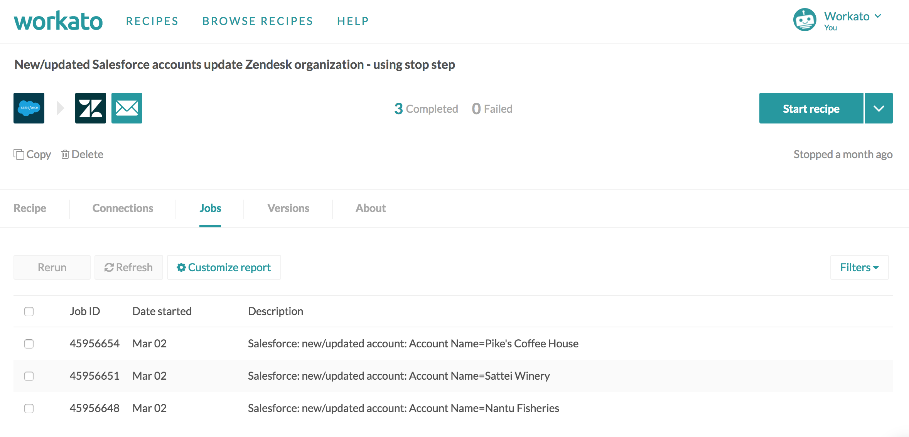
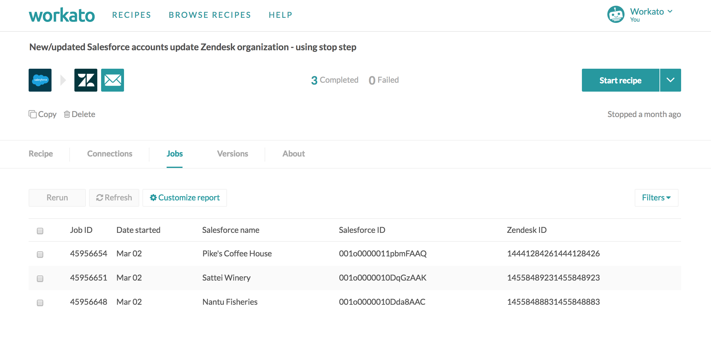
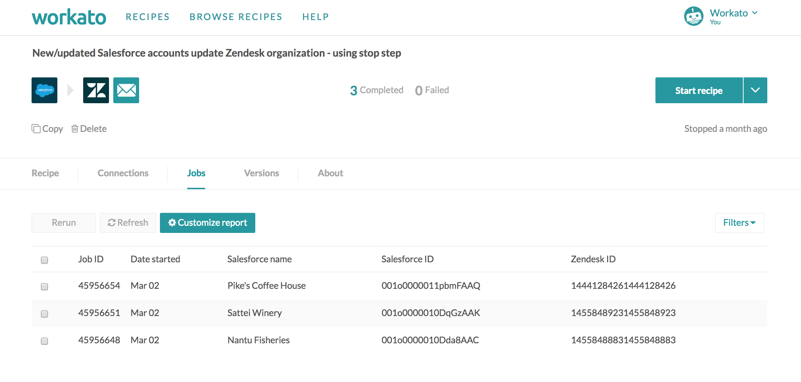
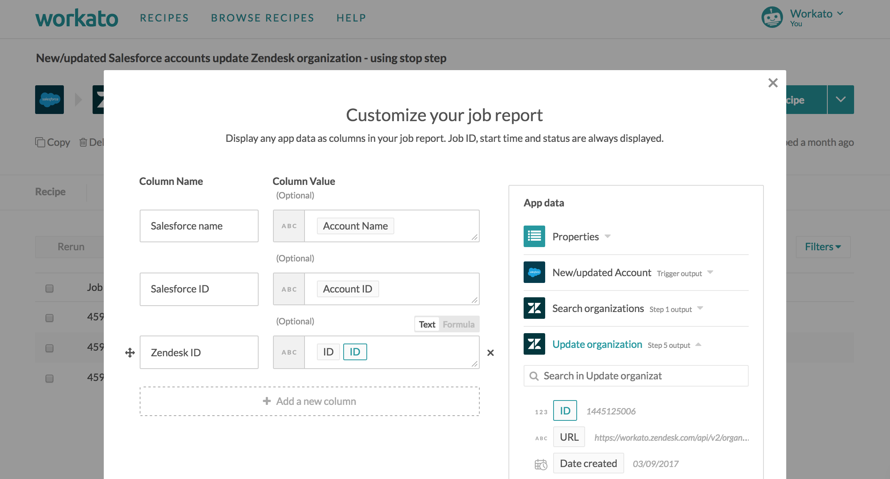
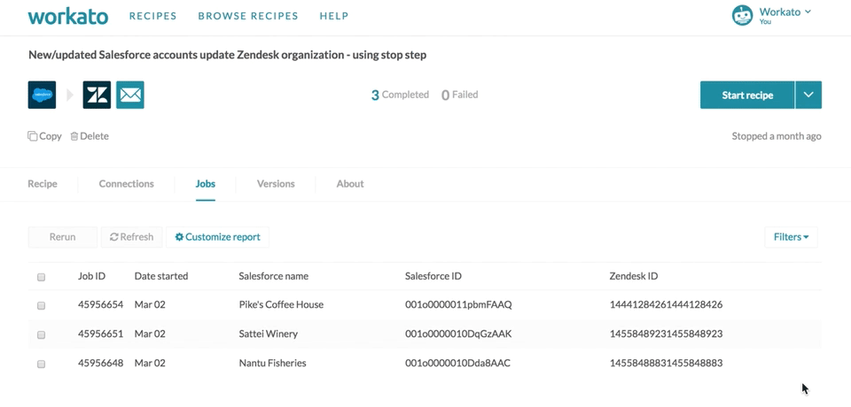
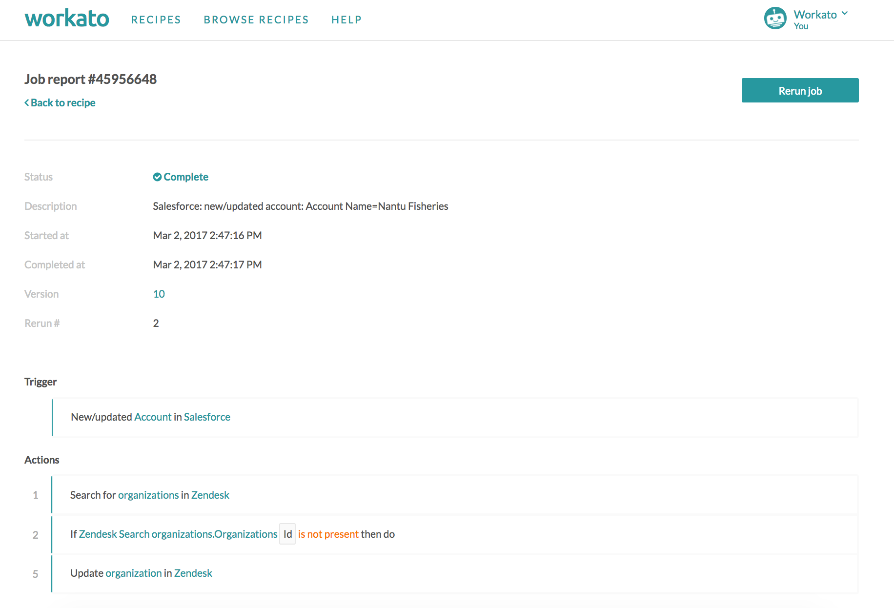
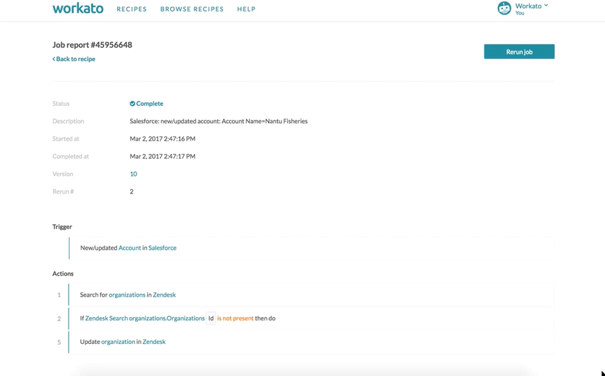
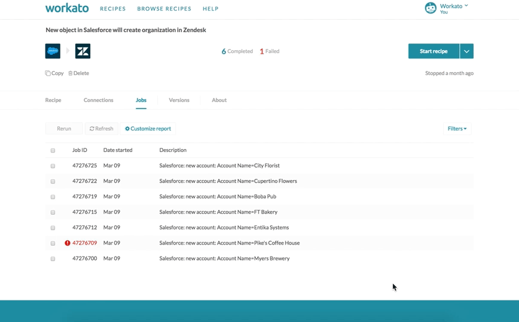
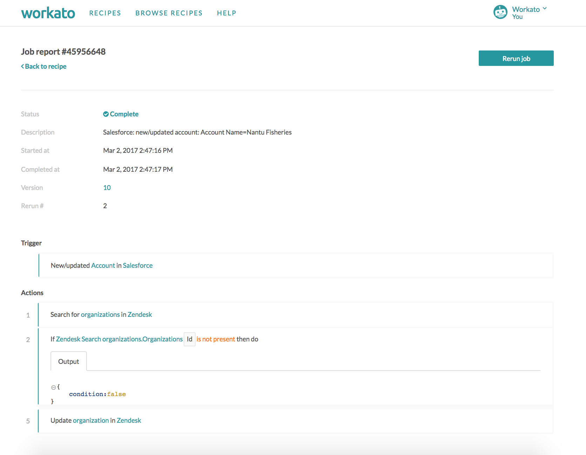
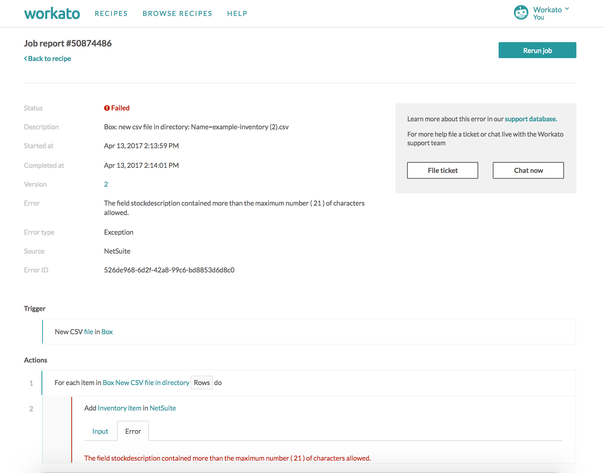

Jobs
When an active recipe processes a trigger event, i.e. actions in the recipe are executed, it results in a job. Each job conists of a trigger event and the sequence of actions it carried out, according to the recipe logic. This set and sequence of actions executed depends on the data of the specific trigger event.
Workato provides complete details into the execution flow of a job, i.e. what steps were executed, and the data input and output from every step. Workato also supports rerunning of jobs, in cases whereby an error stops a job from full completion.
Jobs report
The jobs report is a record of all processed jobs. For each processed job, you can view complete details i.e. execution flow, data input/output from every step.
Information such as date, time processed and job IDs, can be found here. The following shows the default jobs report page.
 Non-customized, default jobs report page
Custom report
The jobs report can be further customized to show any data available in the recipe, e.g. if processing invoices, your job report can have Invoice ID, Invoice amount, etc. Below, as the recipe is syncing Salesforce accounts and Zendesk organizations, the relevant IDs and names are shown in the custom jobs report.
 Customized jobs report page
To create a custom jobs report, click on the 'Customize report' button.
 Customize report button
You can use datapills from any data tree in your recipe for the column values. In the example below, the custom jobs report contains the Xero invoice ID, Infusionsoft invoice ID, as well as payment and contact information.
 Popup where customization of jobs report takes place
Job status
Jobs can have the following statuses:
- Completed
Completed indicates that the job was processed successfully.
- Failed
Failed indicates that the job ended because of an error. Errors can generally be attributed to failures in executing actions. e.g. an app was not reachable, or a contact being added already exists, etc.
When an error is encountered, job execution stops i.e. downstream steps are not executed. Such jobs may create incomplete records in your apps as it failed before finishing all steps.
- Pending
Pending indicates that the job is still being processed.
- Aborted
Aborted is a rare state that a job can get into if it has pending jobs and the recipe has been affected in a manner that these pending jobs cannot finish processing.
Job details
From the jobs report, you can view detailed information about each job as well as step-level information. This is useful in several ways:
- Debugging your recipe
During testing, jobs may show up as completed in the jobs report, but they might not be processed in the manner you expect - taking a look at the exact steps processed by the recipe will help in ensuring the recipe is processing jobs in the expected manner.
- Troubleshooting your job errors
If jobs fail, you can take a look at the run-time data to understand why the job failed at specific step.
To view job details, simply click on the job you are interested in seeing. This brings you into the job details screen, where the sequence of actions carried out by the job is listed in detail.
 Getting to job details page
Job details
The job details page shows the input data and output data of each step in the recipe, allowing you to inspect the job and debug it if needed.
 Job details page
The top part of the page holds the job metadata - job status, description, start and end time, the recipe version that the job was carried out on, and the rerun number of this particular job.
 Job metadata
Job metadata
The bottom part of the page holds the execution details of the job. Expand the steps to view the input and output data.
 Job step details
Errors
If your job encounters an error and stops processing before it should, the job details page will indicate the failed step. Expand it to view the details.
 Job error
Job error
In addition, to quickly view errors from the jobs report page, hover on the job and a popup will appear with the error details.
 Error popup on hover
Conditional step
When conditional actions are expanded, there is a single "Output" tab. This shows whether the condition evaluated to true or false. If true, the the nested actions take place. If false, the nested actions do not take place, and the recipe proceeds to the next possible action.
In the following example, we see that the conditional action in step 2 evaluated to false. In this case, steps 3-4 were not carried out as there were nested steps within the conditional action. The recipe therefore skipped to carry out step 5.
 Job details for recipe with conditional action
Repeat step
Repeat steps will not display steps made during all iterations. For example, if your foreach step processed a list with 10 items, only the last (tenth) item will show up in the job details page.
Similarly, when an error occurs within a repeat step, the job details will show only the steps carried out in that particular iteration, and not any other iteration before that.
 Error within repeat step
Rerun jobs
Any job (completed, failed, etc.) can be rerun. Workato stores the data of the trigger event, and reruns jobs using this copy of the trigger event.
Rerun of a job will always use the latest version of the recipe. i.e. if the recipe has been modified since the job ran, rerun will use the most recent version.
You can find out more about job reruns here.
Timeouts
If a job or a single step is taking too long to execute, it will time out. The current limit is 25 seconds for a single step, and 90 seconds for a single job. The error message for a job that times out will explicitly mention the reason.
In these cases, you might have to further optimize your recipe to ensure that they don't hit this time limit.